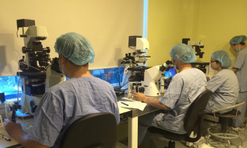

Nhiều người nhờ mang thai hộ vì sợ đẻ
Không muốn mang thai vì sợ ảnh hưởng sắc đẹp, vóc dáng, mất cơ hội thăng tiến sự nghiệp nên nhiều phụ nữ xin bệnh viện tư vấn mang thai hộ
Nhiều người dân đang ngộ nhận về quy định mang thai hộ, theo bác sĩ Hoàng Thị Diễm Tuyết, Phó giám đốc Bệnh viện Từ Dũ. Phát biểu tại hội thảo phổ biến nghị định về sinh con bằng kỹ thuật thụ tinh trong ống nghiệm và điều kiện mang thai hộ, ngày 31/3, bác sĩ Tuyết nói rằng vì ngộ nhận nên không ít người dân liên hệ với bệnh viện nhờ tư vấn mang thai hộ, kể cả sợ sinh...
Đỏ mắt tìm người mang thai hộ
Từ ngày 15/3 cho phép mang thai hộ
>> Sức khỏe <<
7 lời khuyên để từ bỏ thuốc lá
Làm những việc theo sở thích như nấu ăn, làm đồ gỗ, chơi nhạc cụ... để bàn tay bận rộn khi lên cơn thèm thuốc.
Tuổi thọ bị mất như thế nào do thuốc lá, rượu, ma túy
15 triệu đàn ông Việt tự đầu độc mình bằng thuốc lá
>> Phụ nữ <<
Điều trị u xơ tử cung không cần phẫu thuật
Nguyên tắc hoạt động của phương pháp Fus-MRI là dùng sóng siêu âm cường độ cao đốt các tế bào khối u đã được định vị trước, cho đến khi khối u bị hoại tử.
>> Sức khỏe <<
Cách làm xẹp bụng bia
Để làm xẹp chiếc bụng bia, cần giảm uống bia và thay thế bằng thực phẩm giàu năng lượng như rau xanh, hoa quả, các loại hạt, hải sản và thịt nạc.
Hành trình giảm cân để thành hoa hậu của cô gái béo 100 kg
5 thủ thuật giảm cân cần biết